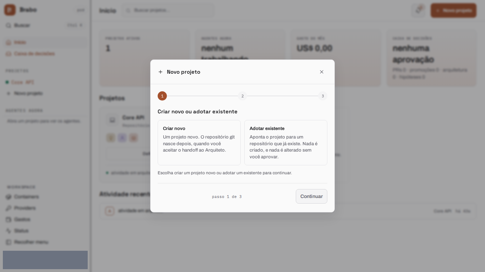
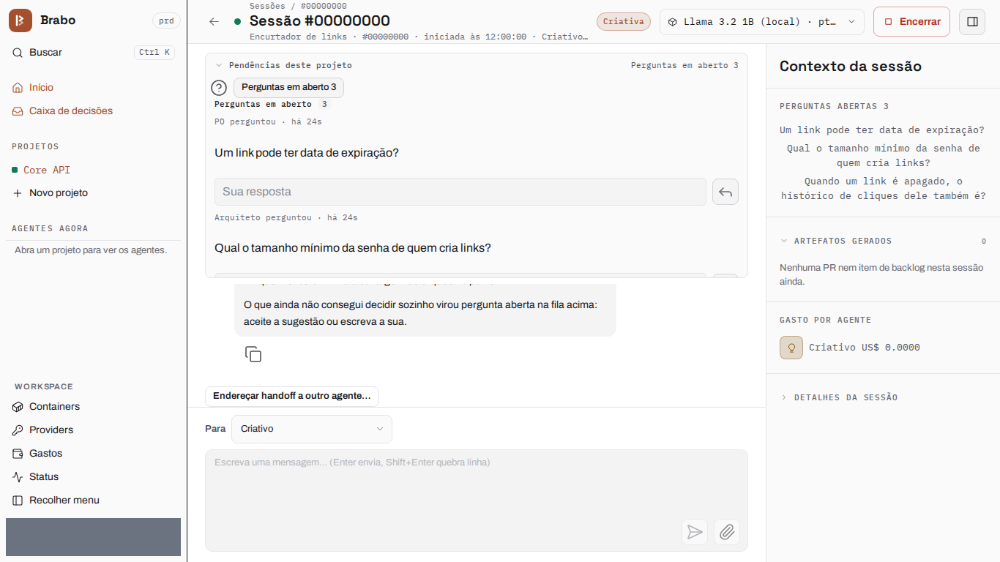
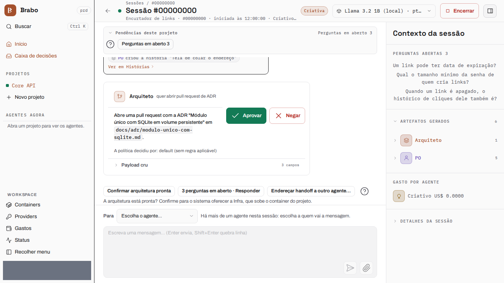

Do zero a um entregável
Esta página acompanha um projeto de ponta a ponta, de um workspace vazio até um entregável rodando: um encurtador de links (Node 22 + SQLite), com o time inteiro no mesmo modelo. As telas dos passos 1 a 6 são capturas da interface atual, geradas pelo brabo-qa a cada versão e com os dados de teste ocultados.
Registro de 14/10/2026: descreve o Brabo daquela data
A execução que serve de exemplo foi gravada ao vivo, e estes números são dela. O projeto, viralabs-app-2026-10-14b, rodou com Claude Haiku 5.5 e custou US$ 1,07. Da ideia à execução foram 13 minutos, e até o último merge cerca de 57 minutos de interação. Saíram 8 de 8 tarefas, mais o ADR e a pull request de infraestrutura, e um entregável cuja suíte passa 102/102 num clone limpo. As telas dos passos abaixo são da interface atual, não dessa gravação.
Tudo pelo chat do Criativo
A execução inteira foi conduzida de um lugar só, o chat da sessão do Criativo: perguntas abertas, a confirmação da arquitetura e cada merge foram decididos ali, sem recarregar a página nem abrir outra aba.
O caminho, em seis passos:
- Criar o projeto e escolher onde o código mora.
- Dar um modelo ao time, em uma ação só.
- Descrever a ideia e responder as perguntas abertas dos agentes.
- Conferir o PO, o Arquiteto e o ADR, e confirmar a arquitetura.
- Aprovar o plano de execução e ligar o modo automático.
- Mergear pelo chat cada pull request que passar nos gates.
Cada passo abaixo diz o que você faz e o que os agentes devolvem. As telas são as da versão atual; os números da execução de 14/10 estão no quadro acima.
1. Criar o projeto
Você cria o projeto no assistente e escolhe onde o código mora. Aqui é uma pasta montada: o assistente sugere um caminho dentro da base de projetos da instalação, e a pasta só precisa existir quando a Infra sobe o container. Nada é provisionado ainda — o repositório nasce depois, quando o Arquiteto entra.

2. Dar um modelo ao time
Em Configurações você aplica um modelo a todos os agentes numa ação só. Esta execução aplicou o Claude Haiku 5.5 ao time inteiro.

3. A ideia, e as perguntas que os agentes devolvem
Você descreve o produto no chat do Criativo. No primeiro turno o Criativo grava 7 regras de negócio e 1 decisão, e transforma o que não conseguiu decidir sozinho em perguntas abertas, cada uma com uma resposta sugerida e as regras que ela afeta ("quando um link é apagado, o histórico de cliques dele também é?"). As perguntas ficam na fila "Perguntas abertas" no topo do chat: você aceita a sugestão ou digita a sua resposta, e a resposta é gravada como decisão. A linha de fecho do turno diz o que foi gravado ("Gravado neste turno: 7 regras de negócio, 1 decisão, 2 perguntas abertas"). Quando você terminar, "Estou pronto — a necessidade está validada" passa o trabalho ao PO.

4. PO, Arquiteto e o ADR
O PO quebra as regras num backlog — 4 épicos, 8 histórias e 8
tarefas, em cerca de um minuto e meio — e também pergunta de volta quando
falta um valor a uma regra ("qual o tamanho mínimo da senha?"). Com toda regra
coberta por uma história, o handoff ao Arquiteto é aceito
automaticamente. O Arquiteto propõe o ADR como pull request
(arquiteto[bot], PR #1, "Módulo único com SQLite em volume persistente") e,
com a arquitetura definida, pede que você a confirme:
"Confirmar arquitetura pronta" é o que traz a Infra.

5. Infra, o plano e o modo automático
O Infra Lead sobe o container do projeto sozinho e abre a pull request de
infraestrutura (infra[bot], PR #2). O Dev Lead lê o backlog e o mapa de
módulos e propõe o plano de execução; aprovar o plano é o que ativa a
execução. A tela oferece o modo automático para o time inteiro num
clique, dizendo o que ele não libera: merges em branch protegida continuam
seus. Daí em diante o dev agent trabalha dentro do container (/work), e você
pode ler no chat cada comando que ele rodou e a saída.

6. Merges pelo chat
Cada tarefa roda no dev agent (90 s em média de pegar a tarefa até a pull request, entre 36 s e 144 s) e passa pela esteira Dev → QA → SecOps → Você. A pull request que passa nos gates cai na fila "PRs prontas para merge" no topo do chat do Criativo: Mergear propõe o merge e Aprovar, no mesmo bloco, o confirma. Nesta execução as últimas sete pull requests (#4 a #10) foram mergeadas em cerca de dois minutos, sem recarregar a página.

O entregável
Registro de 14/10/2026: descreve o Brabo daquela data
A execução gravada em 14/10 terminou assim.
A branch dev do repositório do projeto, clonada limpa e rodada em node:22
com npm test, passou em 102/102 testes. docker compose up subiu a API
na porta 8080, e cada regra foi conferida por HTTP: login errado e requisição
sem token recebem 401; uma URL ftp ou com mais de 2048 caracteres recebe 400
INVALID_URL; o código curto tem 7 caracteres; o redirecionamento público é
um 302 que grava o clique; código desconhecido recebe 404 LINK_NOT_FOUND e
link expirado 410 LINK_EXPIRED sem contar o clique; apagar um link devolve
204 e remove os cliques dele; o painel mostra a contagem e o histórico de
cliques; npm run user:create recusa senha com menos de 12 caracteres; e
/docs serve a referência da API. O preflight de CORS a partir de
127.0.0.1:8080 e de localhost:8080 recebe cada um o seu
Access-Control-Allow-Origin, e uma origem estranha não recebe nenhum.
Próximo passo
- Orquestrar um produto em vários repositórios a trilha para dividir um produto como o Brabo foi dividido.